Lecture 1: Course Vision and When to Use ML
Lecture by Josh Tobin.
Notes by James Le and Vishnu Rachakonda.
Published August 8, 2022.
Download slides.
1 - Course Vision
History of FSDL
Full Stack Deep Learning (FSDL) is the course and community for people who are building products that are powered by machine learning (ML). It's an exciting time to talk about ML-powered products because ML is rapidly becoming a mainstream technology - as you can see in startup funding, job postings, and continued investments of large companies.
FSDL was originally started in 2018 when the most exciting ML-powered products were built by the biggest companies. However, the broader narrative in the field was that very few companies could get value out of this technology.
Now in 2022, there's a proliferation of powerful products that are powered by ML. The narrative has shifted as well: There's standardization that has emerged around the tech stack - with transformers and NLP starting to seep their way into more use cases, as well as practices around how to apply ML technologies in the world. One of the biggest changes in the field in the past four years has been the emergence of the term MLOps.
In addition to the field being more mature and research continuing to progress, a big reason for this rapid change is that the training of models is starting to become commoditized.
-
With tools like HuggingFace, you can deploy a state-of-the-art NLP or CV model in one or two lines of code.
-
AutoML is starting to work for a lot of applications.
-
Companies like OpenAI are starting to provide models as a service where you don't even have to download open-source packages to use them. You can make a network call to get predictions from a state-of-the-art model.
-
Many libraries are starting to standardize around frameworks like Keras and PyTorch Lightning.
AI Progress
The history of ML is characterized by stratospheric rises and meteoric falls of the public perception of the technology. These were driven by a few different AI winters that happened over the history of the field - where the technology didn't live up to its hype. If you project forward a few years, what will happen to ML?
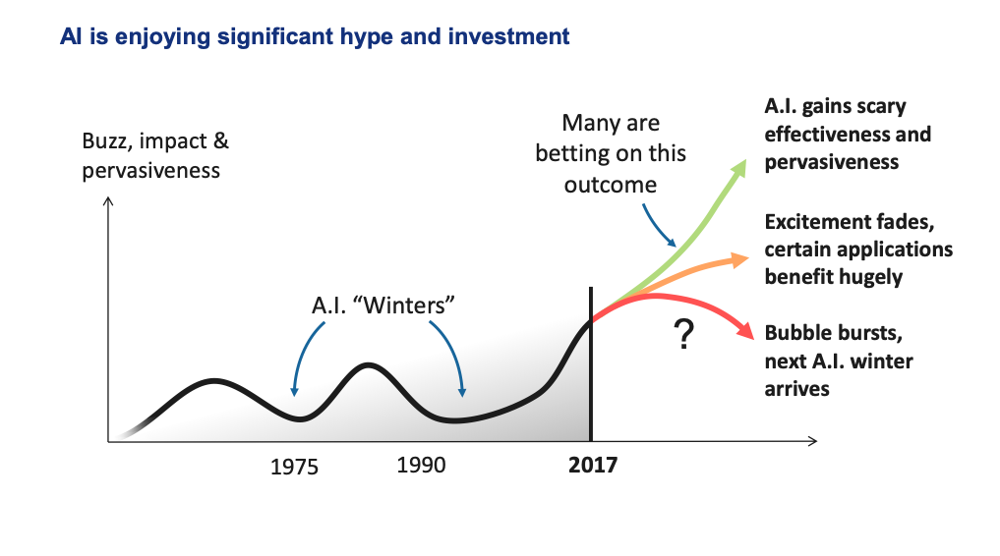
Source: 5 Things You Should Know About AI (Cambridge Consultants, May 2017)
Here are the major categories of possible outcomes and our guess about their likelihoods:
-
A true AI winter, where people become skeptical about AI as a technology. We think this is less likely.
-
A slightly more likely outcome is that the overall luster of the technology starts to wear off, but specific applications are getting a ton of value out of it.
-
The upside outcome for the field is that AI continues to accelerate rapidly and becomes pervasive and incredibly effective.
Our conjecture is that: The way we, as a field, avoid an AI winter is by translating research progress into real-world products. That's how we avoid repeating what has happened in the past.
ML-Powered Products Require a Different Process
Building ML-powered products requires a fundamentally different process in many ways than developing ML models in an academic setting.
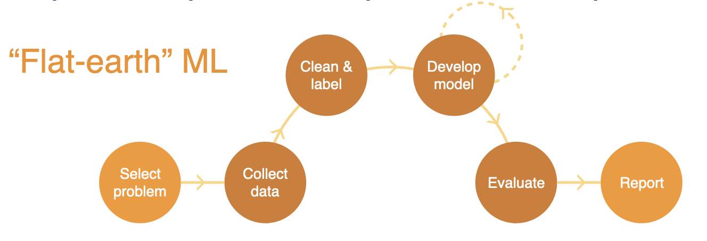
In academia, you build "flat-earth" ML - selecting a problem, collecting data, cleaning and labeling the data, iterating on model development until you have a model that performs well on the dataset collected, evaluating that model, and writing a report at the end.
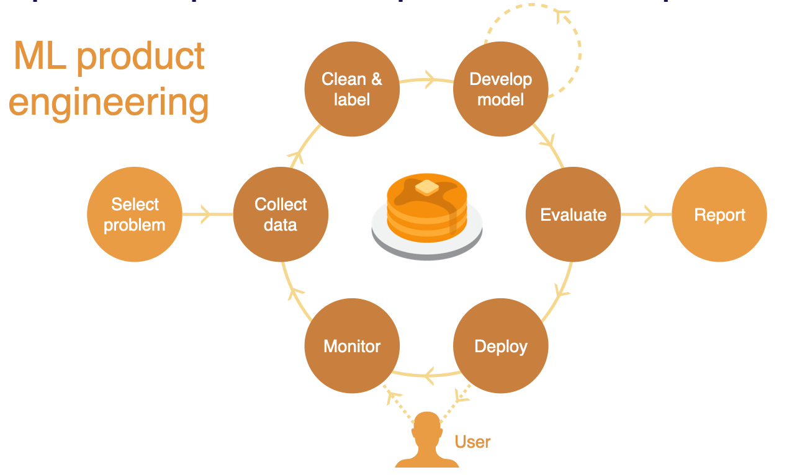
But ML-powered products require an outer loop where after you deploy the model into production, you measure how that model performs when it interacts with real users. Then, you use real-world data to improve your model, setting up a data flywheel that enables continual improvement.
This Course
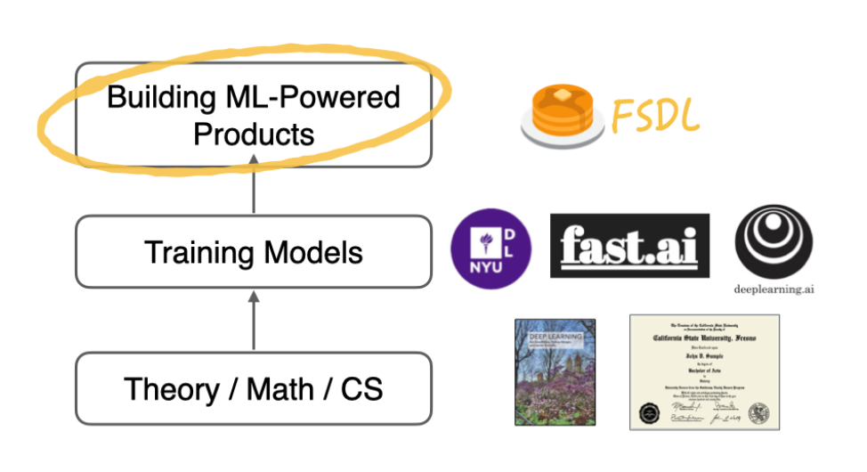
This class is about the unique aspects you need to know beyond training models to build great ML-powered products. Here are some concrete goals for us:
-
Teaching you generalist skills and an understanding of the components of ML-powered products (and ML projects more generally).
-
Teaching you enough MLOps to get things done.
-
Sharing best practices and explaining the motivation behind them.
-
Learning things that might help you with job interviews for ML engineering roles.
-
Forming a community to learn together and from each other.
We do NOT try to:
-
Teach you ML or software engineering from scratch.
-
Cover the whole breadth of deep learning techniques.
-
Make you an expert in any single aspect of ML.
-
Do research in deep learning.
-
Cover the full spectrum of MLOps.
If you feel rusty on your pre-requisites but want to get started with FSDL, here are our recommendations to get up to speed with the fundamentals:
-
Andrew Ng's Machine Learning Coursera course
-
Google's crash course on Machine Learning
-
MIT's The Missing Semester on software engineering
ML-Powered Products vs MLOps
MLOps, as a discipline, has emerged in just the last few years. It is about practices for deploying, maintaining, and operating ML systems that generate ML models in production. A lot of MLOps is about:
-
How do we put together an infrastructure that allows us to build models in a repeatable and governable way?
-
How can we run ML systems in a potentially high-scale production setting?
-
How can we collaborate on these systems as a team?
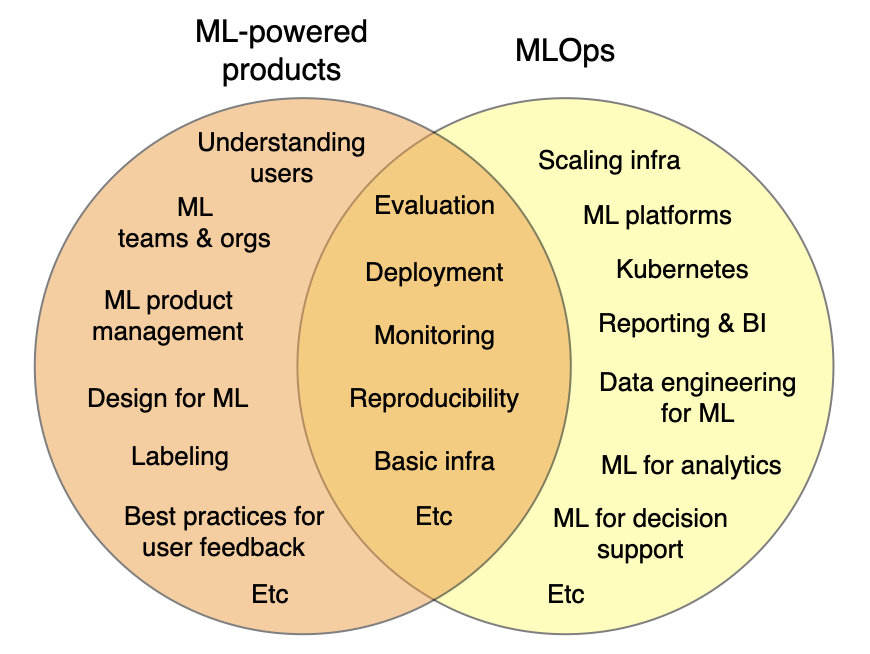
ML-powered product building is a distinct but overlapping discipline. A lot of what it takes to build a great ML-powered product goes beyond the infrastructure side of ML systems. It focuses on how to fit ML into the context of the product or the application that you're building.
Other topics in the scope of the ML product discipline include:
-
How do you understand how your users are interacting with your model?
-
How do you build a team or an organization that can work together effectively on ML systems?
-
How do you do product management in the context of ML?
-
What are the best practices for designing products that use ML as part of them?
This class focuses on teaching you end-to-end what it takes to get a product out in the world that uses ML and will cover aspects of MLOps that are most critical in order to do that.
Chapter Summary
-
ML-powered products are going mainstream thanks to the democratization of modeling.
-
However, building great ML-powered products requires a different process from building models.
-
Full-Stack Deep Learning is here to help!
2 - When To Use Machine Learning
When to Use ML At All
ML projects have a higher failure rate than software projects in general. One reason that's worth acknowledging is that for many applications, ML is fundamentally still research. Therefore, we shouldn't aim for 100% success.
Additionally, many ML projects are doomed to fail even before they are undertaken due to a variety of reasons:
-
They are technically infeasible or poorly scoped.
-
They never make the leap to a production environment.
-
The broader organization is not all on the same page about what would be considered success criteria for them.
-
They solve the problem that you set out to solve but do not solve a big enough problem to be worth their complexity.
The bar for your ML projects should be that their value must outweigh not just the cost of developing them but also the additional complexity that these ML systems introduce to your software (as introduced in the classic paper "The High-Interest Credit Card of Technical Debt").
In brief, ML systems erode the boundaries between other systems, rely on expensive data dependencies, are commonly plagued by system design anti-patterns, and are subject to the instability of the external world.
Before starting an ML project, ask yourself:
-
Are you ready to use ML? More specifically, do you have a product? Are you collecting data and storing it in a sane way? Do you have the right people?
-
Do you really need ML to solve this problem? More specifically, do you need to solve the problem at all? Have you tried using rules or simple statistics to solve the problem?
-
Is it ethical to use ML to solve this problem? We have a whole lecture about ethics!
How to Pick Problems to Solve with ML
Just like any other project prioritization, you want to look for use cases that have high impact and low cost:
-
High-impact problems are likely to be those that address friction in your product, complex parts of your pipeline, places where cheap prediction is valuable, and generally what other people in your industry are doing.
-
Low-cost projects are those with available data, where bad predictions are not too harmful.
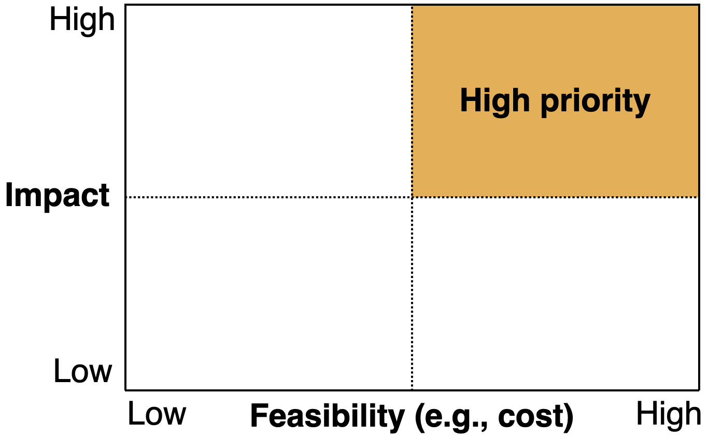
High-Impact Projects
Here are some heuristics that you can use to find high-impact ML projects:
-
Find problems that ML takes from economically infeasible to feasible. A good resource here is the book "Prediction Machines: The Simple Economics of AI." The book's central thesis is that AI reduces the cost of prediction, which is central to decision-making. Therefore, look for projects where making prediction cheaper will have a huge impact.
-
Think about what your product needs. This article from the ML team at Spotify talks about the three principles for designing Discover Weekly, one of Spotify's most powerful and popular ML-powered features.
-
Think about the types of problems that ML is particularly good at. One common class of problem that is overlooked is "Software 2.0", as coined by Andrej Kaparthy. Essentially, if you have a part of your system that is complex and manually defined, then that's potentially a good candidate to be automated with ML.
-
Look at what other people in the industry are doing. Generally, you can read papers and blog posts from both Big Tech and top earlier-stage companies.
Low-Cost Projects
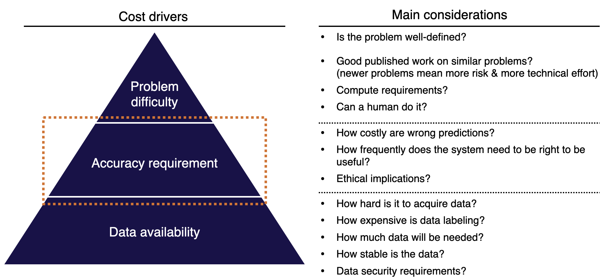
There are three main drivers for how much a project will cost:
-
Data availability: How hard is it to acquire data? How expensive is data labeling? How much data will be needed? How stable is the data? What data security requirements do you have?
-
Accuracy requirement: How costly are wrong predictions? How frequently does the system need to be right to be useful? What are the ethical implications of your model making wrong predictions? It is noteworthy that ML project costs tend to scale super-linearly in the accuracy requirement.
-
Problem difficulty: Is the problem well-defined enough to be solved with ML? Is there good published work on similar problems? How much compute does it take to solve the problem? Generally, it's hard to reason about what's feasible in ML.
What's Hard in ML?
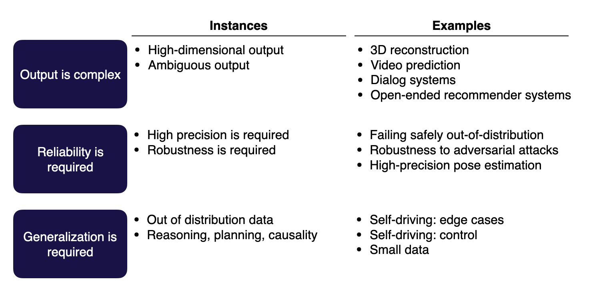
Here are the three types of hard problems:
-
Output is complex: The model predictions are ambiguous or in a high-dimensional structure.
-
Reliability is required: ML systems tend to fail in unexpected ways, so anywhere you need high precision or high robustness is going to be more difficult to solve with ML.
-
Generalization is required: These problems tend to be more in the research domain. They can deal with out-of-distribution data or do tasks such as reasoning, planning, or understanding causality.
ML Feasibility Assessment
This is a quick checklist you can use to assess the feasibility of your ML projects:
-
Make sure that you actually need ML.
-
Put in the work upfront to define success criteria with all of the stakeholders.
-
Consider the ethics of using ML.
-
Do a literature review.
-
Try to rapidly build a labeled benchmark dataset.
-
Build a "minimum" viable model using manual rules or simple heuristics.
-
Answer this question again: "Are you sure that you need ML at all?"
Not All ML Projects Should Be Planned The Same Way
Not all ML projects have the same characteristics; therefore, they shouldn't be planned the same way. Understanding different archetypes of ML projects can help select the right approach.
ML Product Archetypes
The three archetypes offered here are defined by how they interact with real-world use cases:
-
Software 2.0 use cases: Broadly speaking, this means taking something that software or a product does in an automated fashion today and augmenting its automation with machine learning. An example of this would be improving code completion in the IDE (like Github Copilot).
-
Human-in-the-loop systems: Machine learning can be applied for tasks where automation is not currently deployed - but where humans could have their judgment or efficiency augmented. Simply put, helping humans do their jobs better by complementing them with ML-based tools. An example of this would be turning sketches into slides, a process will usually involve humans approving the output of a machine learning model that made the slides.
-
Autonomous systems: Systems that apply machine learning to augment existing or implement new processes without human input. An example of this would be full self-driving, where there is no opportunity for a driver to intervene in the functioning of the car.
For each archetype, some key considerations inform how you should go about planning projects.
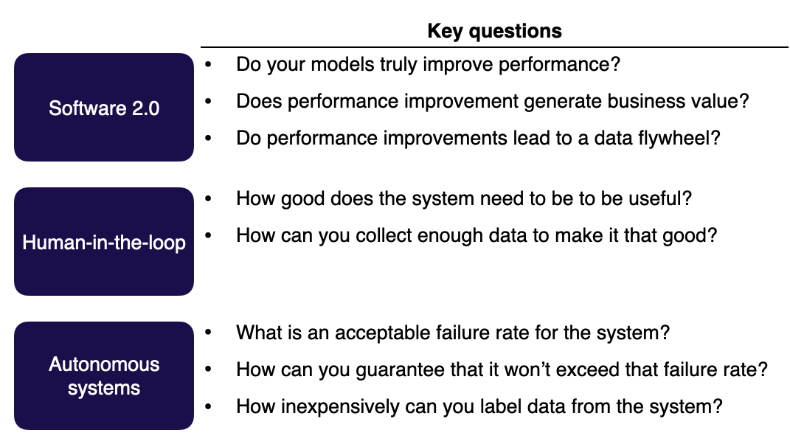
-
In the case of Software 2.0 projects, you should focus more on understanding how impactful the performance of the new model is. Is the model truly much better? How can the performance continue to increase across iterations?
-
In the case of human-in-the-loop systems, consider more the context of the human user and what their needs might be. How good does the system actually have to be to improve the life of a human reviewing its output? In some cases, a model that does even 10% better with accuracy (nominally a small increase) might have outsize impacts on human users in the loop.
-
For autonomous systems, focus heavily on the failure rate and its consequences. When there is no opportunity for human intervention, as is the case with autonomous systems, failures need to be carefully monitored to ensure outsize harm doesn't occur. Self-driving cars are an excellent example of an autonomous system where failure rates are carefully monitored.
Data Flywheels
As you build a software 2.0 project, strongly consider the concept of the data flywheel. For certain ML projects, as you improve your model, your product will get better and more users will engage with the product, thereby generating more data for the model to get even better. It's a classic virtuous cycle and truly the gold standard for ML projects.
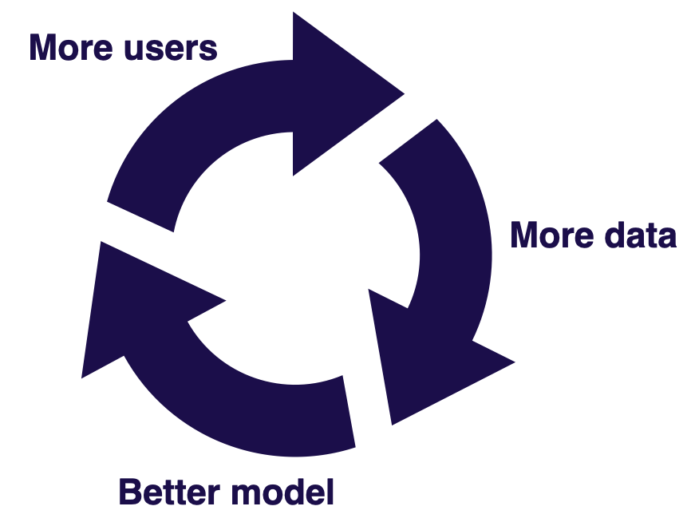
As you consider implementing data flywheels, remember to know the answer to these three questions:
-
Do you have a data loop? To build a data flywheel, you crucially need to be able to get labeled data from users in a scalable fashion. This helps increase access to high-quality data and define a data loop.
-
Can you turn more data into a better model? This somewhat falls onto you as the modeling expert, but it may also not be the case that more data leads to significantly better performance. Make sure you can actually translate data scale into better model performance.
-
Does better model performance lead to better product use? You need to verify that improvements with models are actually tied to users enjoying the product more and benefiting from it!
Impact and Feasibility of ML Product Archetypes
Let's visit our impact vs. feasibility matrix. Our three product archetypes differ across the spectrum.
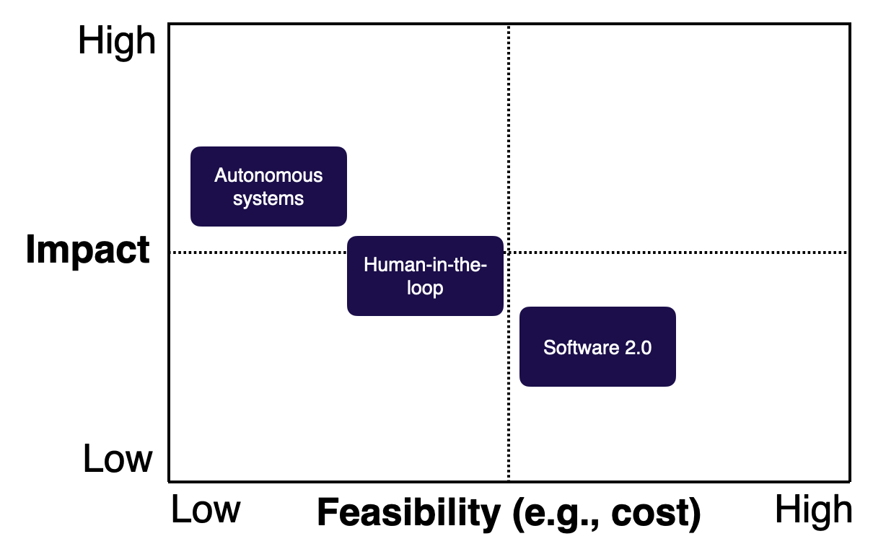
This is a pretty intuitive evaluation you can apply to all your ML projects: If it's harder to build (like autonomous systems), it's likely to have a greater impact! There are ways, however, to change this matrix in the context of specific projects.
-
For Software 2.0, data flywheels can magnify impact by allowing models to get much better and increase customer delight over time.
-
For human-in-the-loop systems, you can increase feasibility by leveraging good product design. Thoughtful design can help reduce expectations and accuracy requirements. Alternatively, a "good enough" mindset that prioritizes incremental delivery over time can make such systems more feasible.
-
For autonomous systems, leveraging humans in the loop can make development more feasible by adding guardrails and reducing the potential impact of failures.
Just Get Started!
With all this discussion about archetypes and impact matrices, don't forget the most important component of engineering: actually building! Dive in and get started. Start solving problems and iterate on solutions.
One common area practitioners trip up in is tool fetishization. As MLOps and production ML have flourished, so too has the number of tools and platforms that address various aspects of the ML process. You don't need to be perfect with your tooling before driving value from machine learning. Just because Google and Uber are doing things in a very structured, at-scale way doesn't mean you need to as well!
In this course, we will primarily focus on how to set things up the right way to do machine learning in production without overcomplicating it. This is an ML products-focused class, not an MLOps class! Check out this talk by Jacopo Tagliabue describing MLOps at Reasonable Scale for a great exposition of this mindset.
Chapter Summary
-
ML adds complexity. Consider whether you really need it.
-
Make sure what you're working on is high impact, or else it might get killed.
3 - Lifecycle
ML adds complexity to projects and isn't always a value driver. Once you know, however, that it's the right addition to your project, what does the actual lifecycle look like? What steps do we embark upon as we execute?
In this course, the common running example we use is of a pose estimation problem. We'll use this as a case study to demonstrate the lifecycle and illustrate various points about ML-powered products.
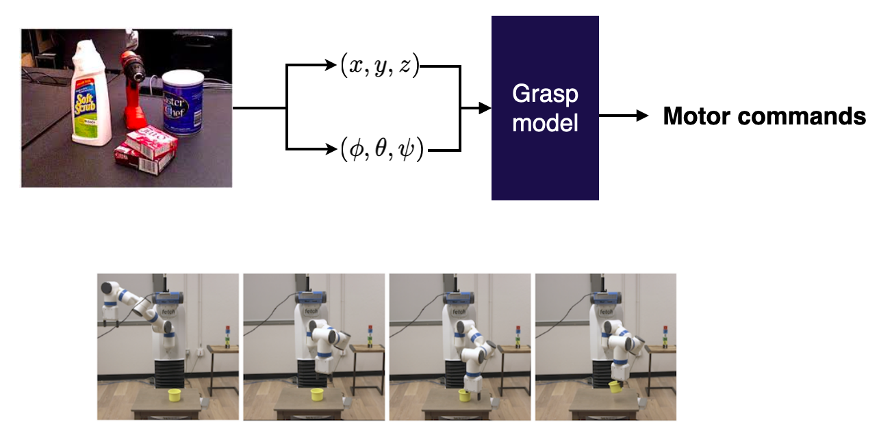
Here's a graphic that visualizes the lifecycle of ML projects:
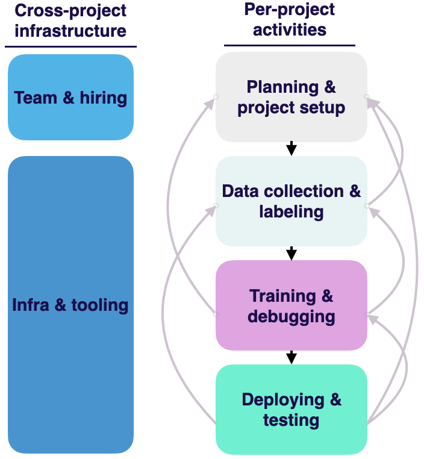
It provides a very helpful structure. Watch from 48:00 to 54:00 to dive deeper into how this lifecycle occurs in the context of a real machine learning problem around pose estimation that Josh worked on at OpenAI.
Let's comment on some specific nuances:
-
Machine learning projects tend to be very iterative. Each of these phases can feed back into any of the phases that go before it, as you learn more about the problem that you're working on.
-
For example, you might realize that "Actually, it's way too hard for us to get data in order to solve this problem!" or "It's really difficult for us to label the pose of these objects in 3D space".
-
A solution might actually be to go back a step in the lifecycle and set up the problem differently. For example, what if it were cheaper to annotate per pixel?
-
This could repeat itself multiple times as you progress through a project. It's a normal and expected part of the machine learning product development process.
-
-
In addition to iteration during execution, there's also cross-project "platform" work that matters! Hiring and infrastructure development are crucial to the long-term health of your project.
-
Going through this lifecycle and winning each step is what we'll cover in this class!
Lecture Summary
In summary, here's what we covered in this lecture:
-
ML is NOT a cure-all. It's a complex technology that needs to be used thoughtfully.
-
You DON'T need a perfect setup to get going. Start building and iterate!
-
The lifecycle of machine learning is purposefully iterative and circuitous. We'll learn how to master this process together!
We are excited to share this course with you for free.
We have more upcoming great content. Subscribe to stay up to date as we release it.
We take your privacy and attention very seriously and will never spam you. I am already a subscriber